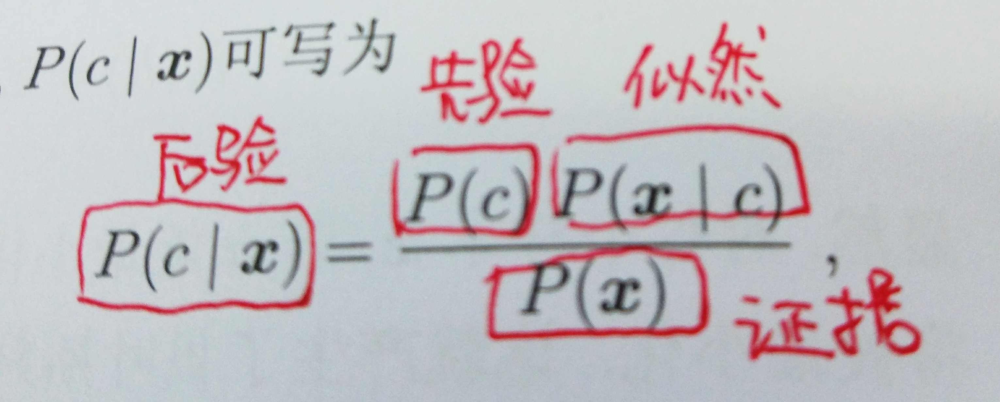

朴素贝叶斯是一类很简单的分类算法, 应用场景较多, 如垃圾邮件分类, 输入法中的拼写检查, 文本情感分类等等. 初学朴素贝叶斯时被”朴素”二字迷惑, 认为之所以称之为 “朴素” 时因为算法很 “简单”, 很naive. 实际上, “朴素” 更准确的含义是（特征间的）条件独立性假设, 由于这一假设使得这个算法很 “naive”, 他的引入是为了简化后验概率的计算. 学习算法不能走马观花, 浅尝辄止, 还是得花时间好好琢磨.
1. 贝叶斯公式
先补充贝叶斯公式作为预备知识.
贝叶斯公式形如下式：

其中$\mathbb{x}$表示样本, $c$表示类别, 贝叶斯公式给出了样本与类别之间的生成关系.
更通俗地讲, 假设给定未知样本$\mathbb{x}$, $c$的可能取值是 ${0, 1, 2, \cdots, k}$, 则概率
2. 朴素贝叶斯算法
朴素贝叶斯模型是一类生成模型, 它的生成关系有贝叶斯公式给出, 模型的训练是通过最大化后验概率实现的.
2.1. 模型假设
朴素贝叶斯算法的前提假设是特征之间的条件独立性, 即：
给定样本$\mathbb{x}=(x_1, x_2, \cdots, x_n)$, 其中$x_i$为第$i$个特征, 则
2.2. 算法推导
由贝叶斯公式可知
由于对于同一个样本, $Pr(\mathbb{x})$取值总是相同的, 从而
其中, $j^{*}$即为样本$\mathbb{x}$的预测类别
2.3. 算法流程
朴素贝叶斯算法的训练过程就是一个”计数”过程. 具体来说, 它对训练集统计下列两类概率
- 先验概率（类概率）
,
其中 $\left| D_{c=j}\right|$ 为数据集中的类别 $j$所占的数目, $\left| D\right|$为数据集的大小 - 条件概率（似然）其中$\left| D_{x_i, c=j} \right|$为类别是$j$且取值为$x_i$的样本数量. $\mu, \sigma$分别是特征$x_i$的均值与方差
朴素贝叶斯算法的整体流程如下图所示:

2.4. 注意项
条件概率连乘积下溢. 若特征数量很多, 则
越接近0. 这种现象称为乘法下溢. 为改进之, 可使用对数似然, 即计算
未登录词. 若带预测样本中出现了训练集中从未出现过的特征取值, 则后验概率总为0, 为了克服这一点, 可以引入拉普拉斯平滑, 即计算
其中, $N_j$为类别$j$的数量, $N_{i}$为特征$x_i$的可能取值数目, $\lambda$为大于0的常数, 常取值为1
3. 总结
朴素贝叶斯算法的主要优点：
- 对小规模的数据表现很好, 能个处理多分类任务, 适合增量式训练, 尤其是数据量超出内存时, 我们可以一批批的去增量训练.
- 对缺失数据不太敏感, 常用于文本分类
- 不受特征尺度的影响, 由于训练过程就是计数的过程, 从而无需归一化等操作
朴素贝叶斯的主要缺点：
- 需要知道先验概率, 且先验概率很多时候取决于假设, 假设的模型可以有很多种, 因此在某些时候会由于假设的先验模型的原因导致预测效果不佳
- 由于我们是通过先验和数据来决定后验的概率从而决定分类, 所以分类决策存在一定的错误率
使用朴素贝叶斯算法时的注意点：
- 贝叶斯分类器与一般意义上的”贝叶斯学习”不同, 前者是通过最大后验概率进行单点估计, 后者是进行分布估计
- 没有平滑之前的朴素贝叶斯算法使用的是极大似然估计, 属于频率派, 平滑之后的进行的是贝叶斯估计, 属于贝叶斯学派
- 使用对数似然和拉普拉斯平滑是两种不错的改进方式